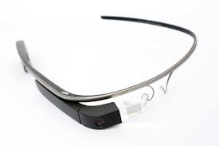
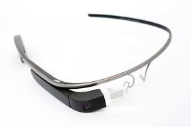
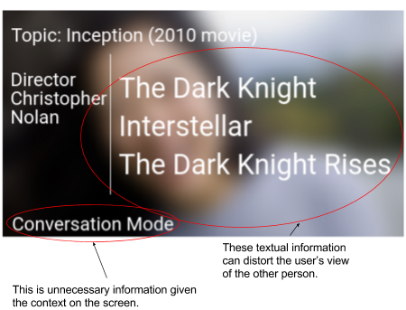
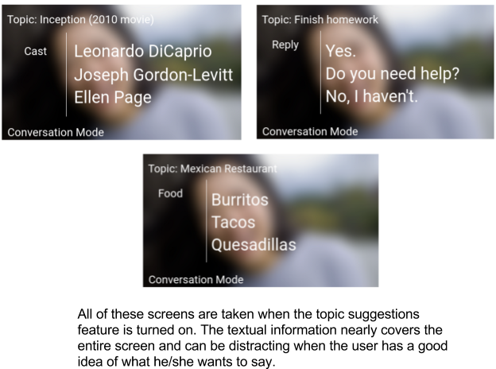

Glass Social Helper
A context-aware interface on Google Glass
for assisting people with Asperger's syndrome
Glass Social Helper
A collaborated design project for Google Glass
MotivationThis project focuses on adapting technology to a subset of the population with special needs—a subset of the population where technology has the most potential to impact positive change. Social Helper is an effort to transform the Google Glass platform into a dialogue-enhancing tool that enables people with Autism spectrum disorder (ASD) to lead more intuitive conversations for themselves.
VisionOur product is a context-sensitive interface on Google Glass to provide the user with short descriptions of current conversational topics so that the user can communicate more effectively. Using the microphone on Google Glass, the application listens to the user’s conversations in order to determine the topic and the tone of conversation using machine learning algorithms. The application also uses the camera on Google Glass to capture the facial expression of the other speaker and analyze using computer vision algorithms to provide clues to the user.
Current SolutionsCurrent autism social skills applications listed on the Autism Speaks website mainly work on mobile and tablet devices, which would not be as helpful when engaging in conversations with others.
There are currently very few social helper wearables for our user demographic. One product that has been developed is MIT’s artificial intelligence “social coach” that focuses on only tracking the conversational tone. While this is development is promising, we feel their product lacks the features such as facial expression recognition needed to enhance the quality of communication between people with ASD and others. In addition, with smartwatches, much attention is being diverted towards reading the results on the person’s wrist. Our product will be more direct since the visual cues will be displayed on the Google Glass, in the user’s line of vision.
Google Glass
 

Natural Language Processing Libraries
The interactive prototype includes three user tasks. The third task is the core feature of our application—providing context-aware textural cues to users.
User task 1A user opens the app for the first time, sets up preferences and watches tutorial.
User task 2A user wants to receive assistance in monitoring their behavior in a conversation.
User task 3A user scrolls through lists of textural cues in order to further the conversation.
Based on user story: As a high-functioning adult with ASD, I want to receive cues about the topic of conversations so I can understand what the conversation is about.
Scenario: The user engages in a conversation where the conversation topic is difficult to determine.
User Experience Evaluation based on Heuristics
The heuristic evaluations revealed that many of the heuristic violations in our prototype occurred in several key heuristic areas: user control and freedom, recognition over recall, aesthetic and minimalist design, error recognition and recovery, and help and documentation.
For example in conversation mode, the amount of textual and visual content on the screen is excessive. This problem violates the aesthetic and minimalist design heuristic which states that irrelevant or unnecessary information should not be included. Additionally, because of the nature of Google Glass, this amount of information is unreadable and can be a burden to the user instead of assisting.

We kept this in mind when we develop our final product. We then proceed on developing a Proof of Concept app on Android using Wit.ai:
However, after we developed our initial prototype on Android, we discovered that we were not able to work together for another semester. Our team was forced to split up due to schedule conflics and thus the project was sadily discontinued. But what we learned during this experience will always guide us in our future research on wearble computing.
[1] A. Conner-Simons, R. Gordon, and CSAIL, "Wearable AI system can detect a conversation’s tone," MIT News, 2017. [Online]. Available: http://news.mit.edu/2017/wearable-ai-can-detect-tone-conversation-0201. Accessed: Feb. 11, 2017.
[2] A. S. Inc, "Autism Apps," 2012. [Online]. Available: https://www.autismspeaks.org/autism-apps?tid_1=39926&tid=All&tid_2=All&keys=. Accessed: Feb. 12, 2017.
[3] Glass platform developer policies," Google Developers, 2015. [Online]. Available: https://developers.google.com/glass/develop/gdk/policies. Accessed: Feb. 10, 2017.
[4] Indiana, "The use of technology in treatment of autism spectrum disorders," 2017. [Online]. Available: https://www.iidc.indiana.edu/pages/the-use-of-technology-in-treatment-of-autism-spectrum-disorders. Accessed: Feb. 12, 2017.